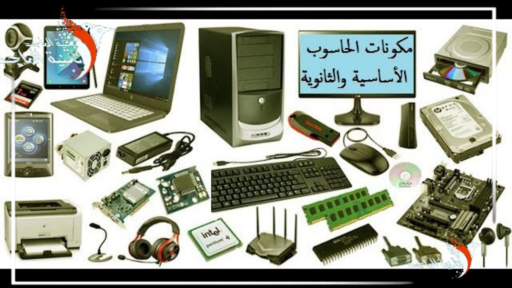

المكونات المادية (Hardware) هي الأجزاء الملموسة من جهاز الحاسوب، وتشمل المكونات الخارجية مثل لوحة المفاتيح والشاشة، والمكونات الداخلية مثل المعالج والذاكرة، وتعمل جميعها معًا لتنفيذ أوامر المستخدم.

هي المكونات التي يتعامل معها المستخدم بشكل مباشر، وتشمل:
تقع داخل صندوق الجهاز، وتؤدي وظائف أساسية لمعالجة وتخزين البيانات، وتشمل:
تعمل جميع المكونات المادية بتناغم لتنفذ المهام المطلوبة، حيث تستقبل وحدات الإدخال البيانات، وتعالجها وحدة المعالجة، وتُخزن في وسائط التخزين، وتُعرض للمستخدم من خلال وحدات الإخراج.
فهم المكونات المادية يساعد المستخدم في اختيار الجهاز المناسب لاحتياجاته، وتشخيص الأعطال، وتحسين الأداء أو ترقية الأجزاء عند الحاجة.
يتكوّن الحاسوب من مكونات مادية ملموسة خارجية مثل لوحة المفاتيح والفأرة والشاشة، وداخلية مثل المعالج والقرص الصلب والذاكرة. وتعمل هذه الأجزاء معًا لتنفيذ العمليات المطلوبة وتحقيق أفضل أداء.